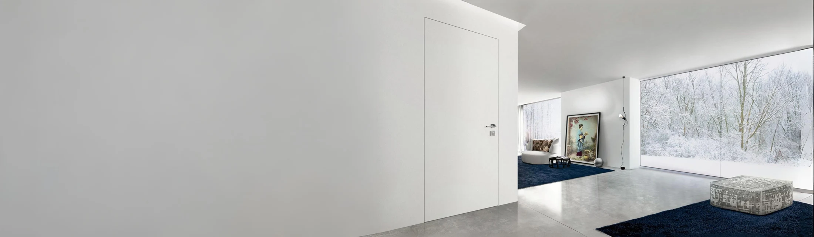

36 ММ
Межкомнатные двери
Полотно, короб, наличники и доборы в едином стиле.
Межкомнатные двери ↗Укажите город и какую дверь рассматриваете. Мы уточним задачу и подскажем, через какого партнёра можно оформить заказ.

Мы не показываем неподтверждённые адреса и не создаём фиктивные городские страницы. Контакт дилера выдаём после проверки актуальности.
| 1. Город | Укажите город, где планируете покупать двери. |
|---|---|
| 2. Система | Если знаете — выберите 36, 42 или 59 мм. Если нет — поможем определить. |
| 3. Задача | Размеры, количество, отделка и стадия проекта помогают подобрать правильный канал продажи. |
| 4. Проверка | Уточняем актуального партнёра для вашего региона. |
| 5. Контакт | Передаём подтверждённые данные для дальнейшего расчёта и заказа. |
Если система пока неизвестна, достаточно описать интерьер и размеры проёма.
Полотно, короб, наличники и доборы в едином стиле.
Межкомнатные двери ↗Скрытый монтаж на фанерном или алюминиевом каркасе — в зависимости от высоты.
Система 42 мм ↗Алюминиевый каркас и высота полотна до 2950 мм.
Система 59 мм ↗Это помогает не отправлять вас случайному продавцу, который не работает с нужной системой или регионом.
Если требуется обычный расчёт и покупка, подберём дилера. Если запрос связан с дизайн-проектом, объектной поставкой или сложной технической задачей, сначала можно проверить решение напрямую с производителем.
После технического уточнения определяем подходящий дальнейший маршрут заказа.Поисковая страница города должна помогать человеку, а не существовать только ради SEO.
Когда для города подтверждён партнёр, можно публиковать его салон, контакты и актуальную информацию.
Если условия отличаются по региону, городская страница может содержать реальную полезную информацию.
Если актуальной точки нет в базе, используем общий поиск дилера вместо страницы с выдуманным адресом.
Для профессиональных запросов есть отдельные маршруты.
Условия сотрудничества вынесены в отдельный B2B-раздел.
Стать дилером ↗Подберём конструкцию, открывание и отделку до выпуска спецификации.
Дизайнерам и архитекторам ↗Работаем с ТЗ, типоразмерами и спецификацией объекта.
Застройщикам и строительным компаниям ↗Укажите город в заявке. Мы проверим актуального партнёра и подскажем, куда обратиться по вашему запросу.
Мы не хотим публиковать устаревшие или неподтверждённые точки. Список будет расширяться по мере подтверждения реальных дилеров и их данных.
Маршрут заказа зависит от региона и задачи. Запрос сначала можно направить Hidden Doors, после чего мы определим подходящий формат дальнейшей работы.
Город, тип двери или систему, примерные размеры, количество и желаемую отделку.
Да. Укажите, что рассматриваете систему 59 мм и параметры проекта — это поможет подобрать партнёра под конкретную задачу.
Напишите город и коротко опишите задачу.
Проверим подходящего партнёра Hidden Doors.